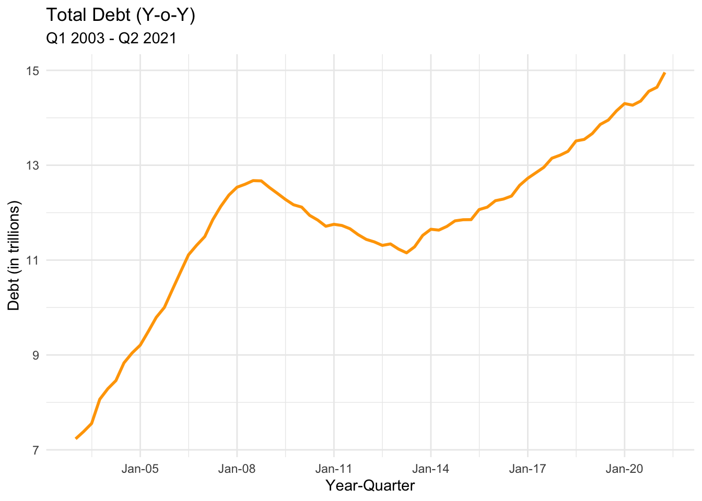
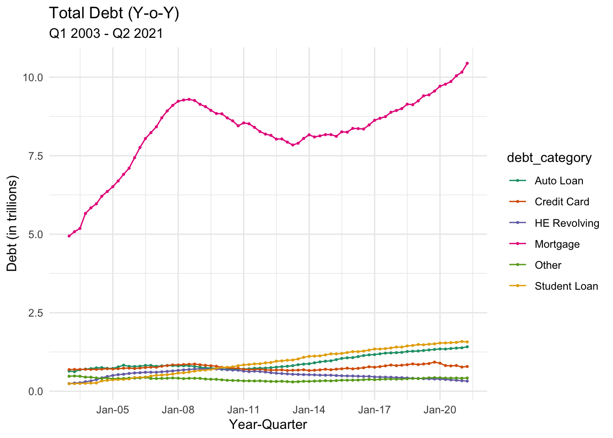

library(tidyverse)
library(ggplot2)
library(readxl)
library(lubridate)
library(scales)
knitr::opts_chunk$set(echo = TRUE, warning=FALSE, message=FALSE)Challenge 6
challenge_6
Prasann Desai
debt
Visualizing Time and Relationships
Challenge Overview
Today’s challenge is to:
- read in a data set, and describe the data set using both words and any supporting information (e.g., tables, etc)
- tidy data (as needed, including sanity checks)
- mutate variables as needed (including sanity checks)
- create at least one graph including time (evolution)
- try to make them “publication” ready (optional)
- Explain why you choose the specific graph type
- Create at least one graph depicting part-whole or flow relationships
- try to make them “publication” ready (optional)
- Explain why you choose the specific graph type
R Graph Gallery is a good starting point for thinking about what information is conveyed in standard graph types, and includes example R code.
(be sure to only include the category tags for the data you use!)
Read in data
Read in one (or more) of the following datasets, using the correct R package and command.
- debt ⭐
- fed_rate ⭐⭐
- abc_poll ⭐⭐⭐
- usa_hh ⭐⭐⭐
- hotel_bookings ⭐⭐⭐⭐
- AB_NYC ⭐⭐⭐⭐⭐
# Function call to read a csv file
debt_df <- read_excel('_data/debt_in_trillions.xlsx')
debt_df# A tibble: 74 × 8
`Year and Quarter` Mortgage HE Revolvin…¹ Auto …² Credi…³ Stude…⁴ Other Total
<chr> <dbl> <dbl> <dbl> <dbl> <dbl> <dbl> <dbl>
1 03:Q1 4.94 0.242 0.641 0.688 0.241 0.478 7.23
2 03:Q2 5.08 0.26 0.622 0.693 0.243 0.486 7.38
3 03:Q3 5.18 0.269 0.684 0.693 0.249 0.477 7.56
4 03:Q4 5.66 0.302 0.704 0.698 0.253 0.449 8.07
5 04:Q1 5.84 0.328 0.72 0.695 0.260 0.446 8.29
6 04:Q2 5.97 0.367 0.743 0.697 0.263 0.423 8.46
7 04:Q3 6.21 0.426 0.751 0.706 0.33 0.41 8.83
8 04:Q4 6.36 0.468 0.728 0.717 0.346 0.423 9.04
9 05:Q1 6.51 0.502 0.725 0.71 0.364 0.394 9.21
10 05:Q2 6.70 0.528 0.774 0.717 0.374 0.402 9.49
# … with 64 more rows, and abbreviated variable names ¹`HE Revolving`,
# ²`Auto Loan`, ³`Credit Card`, ⁴`Student Loan`Briefly describe the data
Response:
From the above output, we can see that the dataset contains different categories of debt at a granularity of year-quarter. It also contains a ‘Total’ column that contains the total of all debt categories in each row.
Tidy Data (as needed)
Is your data already tidy, or is there work to be done? Be sure to anticipate your end result to provide a sanity check, and document your work here.
Response: The data is not already tidy since all categories of debt have a separate column - and we need to have the debt values in a single column and each category-name is another column. We will be using the pivot_longer function to make it tidy.
# Remove the 'Total column'
debt <- select(debt_df, !Total)
# Using the pivot_longer function to pivot the dataset
debt_pivoted <- pivot_longer(debt, col = !'Year and Quarter', names_to = "debt_category", values_to = "debt_in_trillions")# Sanity check: It is expected the total number of rows in the resulting dataset would be 74 * 6 = 444
debt_pivoted# A tibble: 444 × 3
`Year and Quarter` debt_category debt_in_trillions
<chr> <chr> <dbl>
1 03:Q1 Mortgage 4.94
2 03:Q1 HE Revolving 0.242
3 03:Q1 Auto Loan 0.641
4 03:Q1 Credit Card 0.688
5 03:Q1 Student Loan 0.241
6 03:Q1 Other 0.478
7 03:Q2 Mortgage 5.08
8 03:Q2 HE Revolving 0.26
9 03:Q2 Auto Loan 0.622
10 03:Q2 Credit Card 0.693
# … with 434 more rowsAre there any variables that require mutation to be usable in your analysis stream? For example, do you need to calculate new values in order to graph them? Can string values be represented numerically? Do you need to turn any variables into factors and reorder for ease of graphics and visualization?
Document your work here.
Response: I would split the ‘Year and Quarter’ column into separate columns and improve the readability - convert the string -> ‘03’ to number -> 2003
# Extracting year and quarter from the 'Year and Quarter' column and creating separate columns for them
# Converting the 'Year' column to integer
debt_pivoted <- mutate(debt_pivoted,
Quarter = str_split(`Year and Quarter`, ":", simplify = TRUE)[,2],
Year = as.integer(str_split(`Year and Quarter`, ":", simplify = TRUE)[,1]) + 2000)
debt_pivoted# A tibble: 444 × 5
`Year and Quarter` debt_category debt_in_trillions Quarter Year
<chr> <chr> <dbl> <chr> <dbl>
1 03:Q1 Mortgage 4.94 Q1 2003
2 03:Q1 HE Revolving 0.242 Q1 2003
3 03:Q1 Auto Loan 0.641 Q1 2003
4 03:Q1 Credit Card 0.688 Q1 2003
5 03:Q1 Student Loan 0.241 Q1 2003
6 03:Q1 Other 0.478 Q1 2003
7 03:Q2 Mortgage 5.08 Q2 2003
8 03:Q2 HE Revolving 0.26 Q2 2003
9 03:Q2 Auto Loan 0.622 Q2 2003
10 03:Q2 Credit Card 0.693 Q2 2003
# … with 434 more rowsTime Dependent Visualization
debt_year <- group_by(debt_pivoted, Year, Quarter)
debt_yoy <- summarise(debt_year, debt_sum = sum(debt_in_trillions, na.rm = TRUE))
debt_yoy$year_q <- yq(paste0(debt_yoy$Year, ":", debt_yoy$Quarter))
debt_yoy# A tibble: 74 × 4
# Groups: Year [19]
Year Quarter debt_sum year_q
<dbl> <chr> <dbl> <date>
1 2003 Q1 7.23 2003-01-01
2 2003 Q2 7.38 2003-04-01
3 2003 Q3 7.56 2003-07-01
4 2003 Q4 8.07 2003-10-01
5 2004 Q1 8.29 2004-01-01
6 2004 Q2 8.46 2004-04-01
7 2004 Q3 8.83 2004-07-01
8 2004 Q4 9.04 2004-10-01
9 2005 Q1 9.21 2005-01-01
10 2005 Q2 9.49 2005-04-01
# … with 64 more rows# Line plot of trend of Debt over years each quarter (It's very intuitive to visualize this trend in a line chart)
ggplot(debt_yoy, aes(x = year_q, y = debt_sum)) +
geom_line(color = "orange",
size=1) +
scale_x_date(date_breaks = '3 years',
labels = date_format("%b-%y")) +
labs(title = "Total Debt (Y-o-Y)",
subtitle = "Q1 2003 - Q2 2021",
x = "Year-Quarter",
y = "Debt (in trillions)") +
theme_minimal()
Visualizing Part-Whole Relationships
# Line plot of trend of Debt over years each quarter (split by category, It's very intuitive to visualize this trend in a multi-line chart)
debt_pivoted$year_q <- yq(paste0(debt_pivoted$Year, ":", debt_pivoted$Quarter))
ggplot(debt_pivoted, aes(x = year_q, y = debt_in_trillions, color = debt_category)) +
geom_point(size=0.5) +
geom_line(size=0.5) +
scale_x_date(date_breaks = '3 years',
labels = date_format("%b-%y")) +
labs(title = "Total Debt (Y-o-Y)",
subtitle = "Q1 2003 - Q2 2021",
x = "Year-Quarter",
y = "Debt (in trillions)") +
theme_minimal() +
scale_color_brewer(palette = "Dark2")